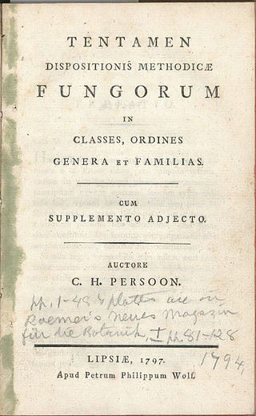

La historia de los hongos
Se presume que los humanos comenzaron a recolectar setas como alimento en tiempos prehistóricos. En civilizaciones antiguas como la griega, romana e hindú, los hongos se consideraban alimentos sagrados. Y a partir de datos en la obra de fray Bernardino de Sahagún y de fragmentos del Popol Vuh y del Chilam Balam, también se cree que en las culturas mesoaméricanas prehispánicas, los hongos adquirieron un rango elevado y llegaron a considerarse comida de dioses y reyes. Quizás en Mesoamérica esa relación tenga que ver más con los hongos alucinógenos que con los alimenticios. Esa costumbre de ingerir hongos con un fin místico o enteogénico, continúa en algunas culturas hasta nuestros días.
Las setas aparecen por escrito por primera vez en las obras de Eurípides (480-406 a. C.). El filósofo griego Teofrasto de Ereso (371-288 a. C.) fue quizás el primero en tratar de clasificar sistemáticamente las plantas; las setas fueron consideradas como plantas a las que faltaban ciertos órganos.
Los antiguos no dejaron ningún documento científico sobre los hongos y solamente dos autores merecen ser mencionados: Plinio el Viejo (23-79 d. C.) por su Naturalis historia, donde escribió sobre las las trufas, y Dioscórides (ca. 40 - ca. 90) por los usos terapéuticos de algunas setas en De re medica. Estos textos, que mencionan solo unas veinte especies, tienen sin embargo solo un interés arqueológico, excepto por haber legado a la ciencia palabras como amanita, boletus, manitaria, myco o tuber. La Edad Media vio poco avance en el cuerpo de conocimiento sobre los hongos. Más bien, la invención de la imprenta permitió a algunos autores disipar las supersticiones y los conceptos erróneos acerca de ellas que los autores clásicos habían perpetuado.